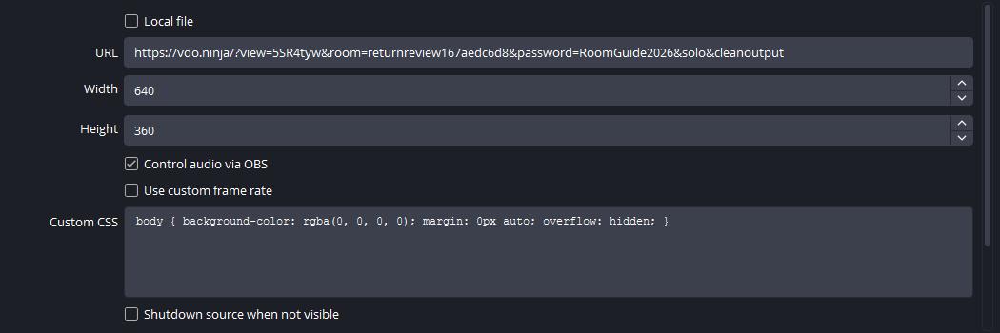
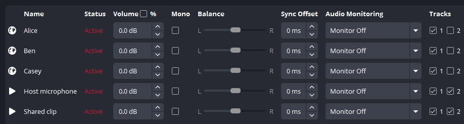
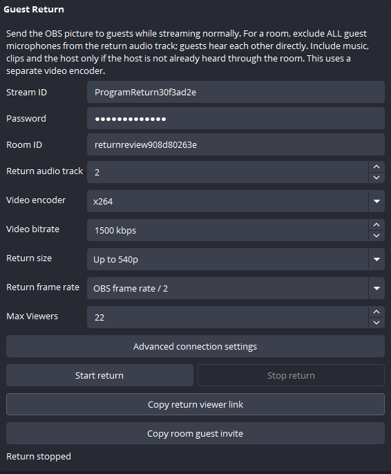
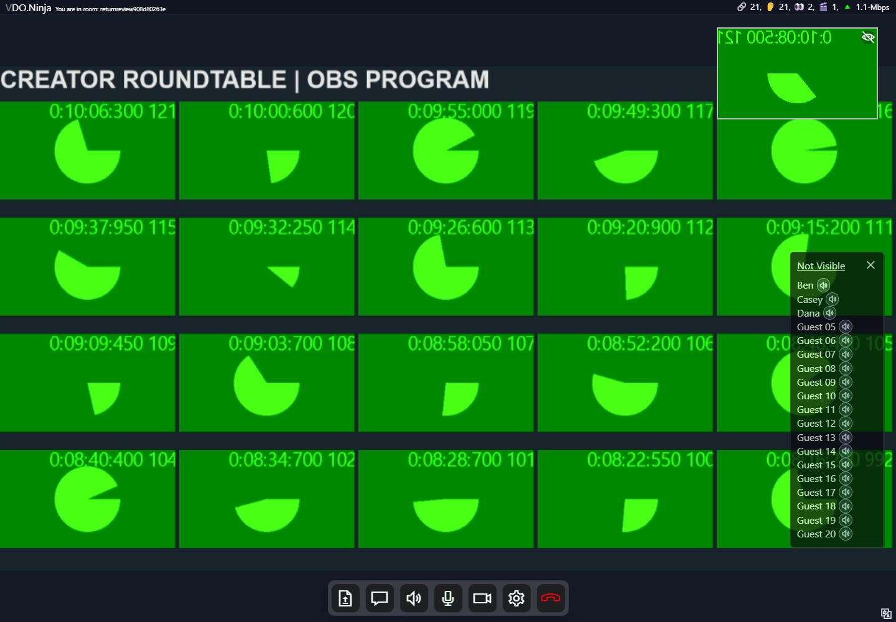

Send your OBS program
to the room.
Guests see the show and hear clips, while talking to each other directly. Your public stream runs alongside it.
Install plugin v1.1.79. Screenshots use disposable test rooms.
Install or update the plugin first
Check your OBS version in its About window, close OBS, then install v1.1.79 into the OBS copy you actually use. Reopen OBS afterward.
| Your setup | Download |
|---|---|
| Windows · OBS 32.2.x | Windows installer |
| Windows · OBS 32.0 or 32.1 | Legacy Windows installer |
| Apple silicon Mac · OBS 32.2.x | macOS installer |
| Linux x86_64 · OBS 32.2.x | Linux package |
On Windows, confirm the correct OBS folder in the installer. These packages do not cover OBS 31 or older or Intel Macs. Full installation instructions and ZIP alternatives.
Everyone who joins with Copy room guest invite receives the program return when it is live. Guests already in the room should rejoin with that invitation.
1Open your room
Create or open your VDO.Ninja director room. Keep your usual YouTube or other streaming destination in OBS.
Add each guest’s individual video to OBS. For a Browser Source, enable Control audio via OBS so you can route its sound.
Where do I get the guest video?
Use the individual guest’s OBS/view link from the director room. Make one source per guest. A return viewer link is for watching the finished program, so do not use it as a guest camera source.

2Give the return its own audio track
Open OBS Advanced Audio Properties. Use track 1 for the public stream and track 2 for Guest Return.
| Sound | 1 · Public | 2 · Return |
|---|---|---|
| Every guest microphone | ✓ On | — Off |
| Music, clips, show audio | ✓ On | ✓ On |
| Host mic, if sent only by OBS | ✓ On | ✓ On |
Guests already hear each other through the room. Sending them again in the return creates delayed voices or echo. If your host mic is also active in the director’s browser, leave that mic off track 2 too.

In Settings → Output, select audio track 1 for your normal stream. Avoid also capturing guest sound through Desktop Audio or audio monitoring.
3Start Guest Return
Open Tools → VDO.Ninja Studio → Guest Return.
- Enter the director room’s Room ID and matching Password.
- Keep the generated Stream ID, or choose a unique return ID.
- Set Return audio track: 2.
- Set Max Viewers to cover guests plus director previews and monitors.
- Click Start return.
For 20 guests, allow 22 viewer slots and use 15 fps (OBS 30 / 2 or 60 / 4). Both presets below passed our automated 20-guest check. Add your public stream to the upload estimate.
| Return preset | Allow upload |
|---|---|
| 540p · 1500 kbps | 47 Mbps |
| 360p · 750 kbps | 26 Mbps |
The return uses a separate H.264 encoder. Leave advanced connection settings at their defaults. Rehearse on your actual connection.
Reduce the return’s load
Choose Up to 540p or Up to 360p under Return size. Return frame rate divides the OBS rate: 60 / 2 gives 30 fps; 30 / 2 gives 15 fps. These controls affect only the return.
Lower Video bitrate separately to reduce upload. Smaller dimensions alone do not lower a fixed bitrate.


4Send the room guest invitation
Click Copy room guest invite and send that link to every guest. Ask existing guests to rejoin with it.
Use the room invite for participants. It joins the conversation and selects the OBS return. Copy return viewer link is for a watch-only monitor.
Guests choose Join Room with Camera, allow their camera and mic, then click START.
What is in the link?
The plugin adds broadcast=YOUR_RETURN_ID to the room invitation. Guests receive that program video and still hear the other guests directly. The room password is included; share the link privately.
5Check the room, then go live
Have guests confirm that the program moves, clips are audible, and nobody hears their own delayed voice. Check the connected viewer count. Start your normal OBS stream when ready.

Stopping Guest Return leaves the public stream running. Start the return again after reopening OBS or changing profiles.
Allow upload for every return viewer
Each guest and director preview receives a separate copy. This is independent of your public audience size.
Planning estimate includes 200 kbps audio per viewer and 25% headroom. Add your public stream and other uploads. This is not a measured connection guarantee.